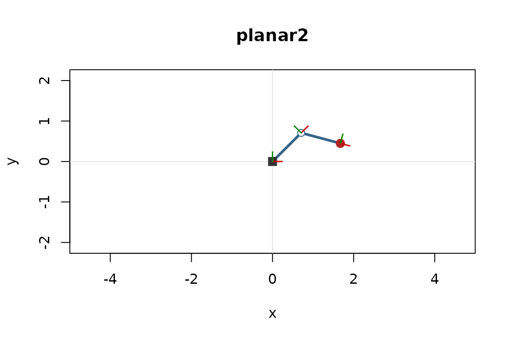

robotcompR is a native R toolkit for robot modeling, kinematics, dynamics, collision checking, motion planning, trajectory generation and planar mobile robotics. Everything is written in R on top of base linear algebra, ‘Matrix’ for sparse least squares, ‘deSolve’ for simulation and ‘xml2’ for URDF files. Nothing requires a robotics middleware installation.
This article is a tour. Each topic has its own article with derivations, reference checks and limitations.
Conventions in one place
| Topic | Convention |
|---|---|
| Units | SI: meters, radians, seconds, kilograms, newtons |
| Rotations | Active, right-handed; matrices act on column vectors |
| Quaternions | Scalar first c(w, x, y, z), Hamilton product,
w >= 0 canonical |
| Euler angles | Intrinsic sequences; "ZYX" returns
c(yaw, pitch, roll)
|
URDF rpy
|
Fixed-axis roll, pitch, yaw:
R = Rz(yaw) Ry(pitch) Rx(roll)
|
| Poses |
T_a_b maps coordinates in frame b into frame a |
| Composition |
T_a_c = T_a_b * T_b_c, with frame names checked when
present |
| Twists and wrenches | Linear part first: c(v, w) and
c(f, tau)
|
| Jacobian rows | Linear velocity rows 1 to 3, angular rows 4 to 6 |
| Points | One point per row in batch functions |
| Planar poses |
c(x, y, theta) with theta wrapped to
[-pi, pi)
|
A first robot
robot_example() ships a few reference models. The
two-link planar arm has unit links with uniform 1 kg rods, so most of
its quantities have closed forms.
arm <- robot_example("planar2")
arm
#> <robot_model> planar2: 3 links, 2 joints, 2 degrees of freedom
#> end effector: link2
#> name type parent child q_index lower upper
#> joint1 revolute base link1 1 -3.141593 3.141593
#> joint2 revolute link1 link2 2 -3.141593 3.141593
robot_joints(arm)
#> name type parent child q_index lower upper
#> joint1 joint1 revolute base link1 1 -3.141593 3.141593
#> joint2 joint2 revolute link1 link2 2 -3.141593 3.141593Forward kinematics returns a robot_pose:
q <- c(pi / 4, -pi / 3)
T <- robot_fk(arm, q)
T
#> <robot_pose> SE(3) world <- link2
#> [,1] [,2] [,3] [,4]
#> [1,] 0.9659 0.2588 0 1.6730
#> [2,] -0.2588 0.9659 0 0.4483
#> [3,] 0.0000 0.0000 1 0.0000
#> [4,] 0.0000 0.0000 0 1.0000
pose_translation(T)
#> [1] 1.6730326 0.4482877 0.0000000
robot_plot(arm, q, frames = TRUE)
Jacobians, singularities and inverse kinematics
J <- robot_jacobian(arm, q)
round(J, 4)
#> joint1 joint2
#> vx -0.4483 0.2588
#> vy 1.6730 0.9659
#> vz 0.0000 0.0000
#> wx 0.0000 0.0000
#> wy 0.0000 0.0000
#> wz 1.0000 1.0000
robot_manipulability(arm, q, rows = 1:2)$yoshikawa
#> [1] 0.8660254
robot_is_singular(arm, c(0.3, 0))
#> [1] TRUE
#> attr(,"manipulability")
#> <robot_manipulability> translational rows (vx, vy, vz)
#> singular values: 2.2361, 1.0641e-16
#> rank 1, Yoshikawa 2.37933e-16, condition Inf, SINGULARInverse kinematics reports convergence and the remaining error instead of silently returning the closest configuration it found:
target <- robot_pose(translation = c(1.2, 0.8, 0))
sol <- robot_ik(arm, target, initial = c(0.5, -0.5),
weights = c(1, 1, 0, 0, 0, 0))
sol$converged
#> [1] TRUE
sol$position_error
#> [1] 2.482534e-16
pose_translation(robot_fk(arm, sol$q))
#> [1] 1.2 0.8 0.0
ik_planar2(1.2, 0.8, 1, 1)
#> q1 q2
#> q2_positive -0.1773902 1.530786
#> q2_negative 1.3533954 -1.530786Dynamics
g <- c(0, -9.81, 0)
robot_mass_matrix(arm, q)
#> joint1 joint2
#> joint1 2.1666667 0.5833333
#> joint2 0.5833333 0.3333333
robot_gravity_torque(arm, q, g)
#> joint1 joint2
#> 15.142942 4.737866
tau <- robot_inverse_dynamics(arm, q, qd = c(0.5, 0), qdd = c(0, 1), gravity = g)
robot_forward_dynamics(arm, q, qd = c(0.5, 0), tau = tau, gravity = g)
#> joint1 joint2
#> -2.325413e-15 1.000000e+00Planning around an obstacle
robot <- robot_capsule_links(arm, radius = 0.05)
env <- robot_environment(block = geom_box(c(0.4, 0.4, 0.4), origin = transl(1.5, 0, 0)))
planner <- robot_planner(robot, "rrt_connect", env)
plan <- robot_plan(planner, start = c(-0.8, 0), goal = c(0.8, 0), seed = 1,
smooth = TRUE)
plan
#> <robot_plan> rrt_connect: success
#> path found (shortcut smoothed)
#> 5 waypoints, length 4.919, 70 nodes, 97 iterations, 1.68 s
#> seed: 1
traj <- robot_traj_path(plan, vmax = 1, amax = 2, dt = 0.05)
robot_traj_check(robot, traj)$ok
#> [1] TRUEMobile robots
sim <- mobile_simulate(robot_unicycle(), c(0, 0, 0),
cbind(1, rep(pi / 8, 16)), dt = 0.5)
plot(sim[, "x"], sim[, "y"], type = "b", asp = 1, xlab = "x (m)", ylab = "y (m)")Where to go next
-
vignette("spatial-math"): rotations, quaternions, poses and Lie groups. -
vignette("robot-models"): joints, links, DH parameters and URDF. -
vignette("kinematics"): forward kinematics, Jacobians and inverse kinematics. -
vignette("dynamics"): RNEA, CRBA, ABA and simulation. -
vignette("trajectories"): polynomial, trapezoidal and Cartesian paths. -
vignette("collision-planning"): geometry, distance queries and sampling-based planners. -
vignette("mobile-robots"): wheeled robot models, path following and localization with EKF, UKF and particle filters. -
vignette("mapping-slam"): occupancy grids, grid search, EKF-SLAM and SE(2) and SE(3) pose graphs.
Scope and limitations
robotcompR is a teaching and research toolkit, not a real-time controller. It is written in R, so planners and filters are meant for problems with a few degrees of freedom and thousands (not millions) of samples. Specific limits:
- Joints are revolute, continuous, prismatic or fixed. Floating, planar and mimic joints are rejected.
- Collision geometry is convex (spheres, boxes, cylinders, capsules
and convex hulls). Meshes are kept as metadata but are not used for
queries. Penetration depths come from closed forms or EPA; when EPA runs
out of iterations the result says so (
depth_known = FALSE) and gives bounds. - Path collision checks are discrete at a user-chosen resolution or continuous by conservative advancement.
- Sampling-based planners are probabilistically complete at best; a failure to find a path never proves that none exists.
- Mobile robot tools are planar (SE(2)); pose graphs also handle SE(3).
- No contact dynamics, friction models or actuator models.